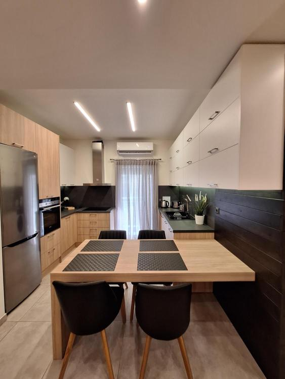

О жилье
до 6 гостей · 2 спальни · 2 кровати · 1 ванная · 78 м²
Современная квартира 78 м² с полным ремонтом на проспекте Василиссис Ольгас, в нескольких минутах от набережной; вокруг рестораны, пекарни и супермаркеты.
Большая гостиная с очень большим угловым диваном, на котором можно и спать, и телевизором. Открытая, полностью оборудованная кухня с обеденным столом, духовкой, варочной панелью, холодильником, микроволновкой и стиральной машиной.
Две спальни с двуспальными кроватями и кондиционером, а также рабочий уголок со столом.
Современная ванная со стеклянной душевой, полотенцами, халатами и средствами по уходу.
Балкон с маркизой, столиком и креслами смотрит на город.
Удобства
- Балкон
- Wi-Fi
- Кондиционер
- Отопление
- Телевизор
- Полностью оборудованная кухня
- Духовка и микроволновка
- Стиральная машина
- Рабочий стол
- Постельное бельё
- Банные полотенца и полотенца для лица
- Халаты
- Шампунь и гель для душа
- Лифт
- Домашние животные по запросу
- Детская кроватка бесплатно
Расположение
Vasilissis Olgas Ave 74, 546 43 Thessaloniki